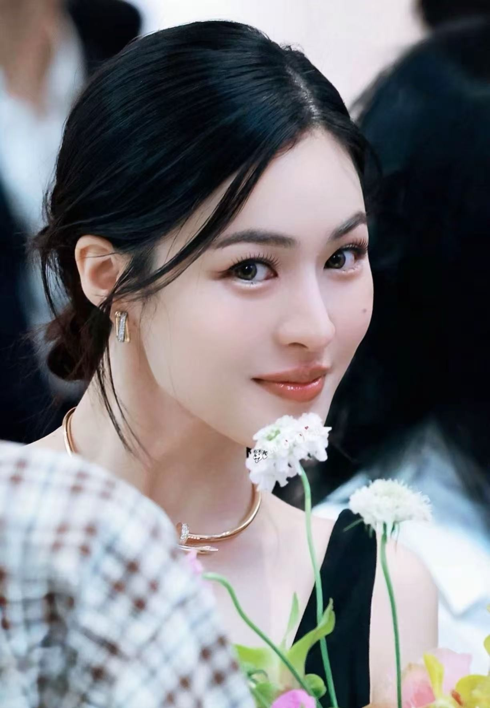

出生于中国香港Born in Hong Kong
1995 年 5 月 11 日出生。
Born May 11, 1995.

LingLing Sirilak Kwong
天使金毛 · 粉丝名：Angel Golden
Angel Golden · Fan Name: Angel Golden
中泰混血 · 泰娱顶流
Fresh, Bright, Bilingual, Official Style
邝玲玲
LingLing Sirilak Kwong
Official Personal Home
邝玲玲（LingLing Sirilak Kwong，泰文名：ศิริลักษณ์ คอง）出生于中国香港，17 岁后移居泰国发展。她为泰国第 3 电视台旗下演员、模特与节目主持人，熟练使用粤语、普通话、英语与泰语，代表作包括《直到天空迎来太阳》、《亲爱的玛卡莉》、《我们的秘密》、《只有你》等。 LingLing Sirilak Kwong (Thai name: ศิริลักษณ์ คอง) was born in Hong Kong and later moved to Thailand at 17. She is an actress, model and host under Channel 3, fluent in Cantonese, Mandarin, English and Thai. Notable works include Until the Sky’s the Sun, The Dear Lady, The Secret of Us and Only You.
1995
出生于香港（1995-05-11）
Born in Hong Kong (1995-05-11)
4
粤语 / 普通话 / 英语 / 泰语
Cantonese / Mandarin / English / Thai
2019
签约泰国第 3 电视台（Channel 3）
Joined Channel 3 (2019)
2024
《我们的秘密》让关注度上升
Gained wider recognition with The Secret of Us (2024)
早年与教育Early Life & Education
邝玲玲在香港成长，2007 年毕业于圣安当小学，随后入读慕光英文书院，17 岁回到泰国完成高中并于 2018 年毕业于孔敬大学国际学院旅游管理专业。 She grew up in Hong Kong, attended Saint Andrews and Mu Kuang English School, returned to Thailand at 17 to finish high school, and graduated from Khon Kaen University International College (B.A., Tourism Management) in 2018.
职业概览Career Snapshot
2018 年获孔敬 Khao Suan Kwang 选美冠军；2019 年签约 Channel 3；2020 年出演首部电视剧并逐步担任主演与综艺主持。 Won the Khao Suan Kwang pageant in 2018; signed with Channel 3 in 2019; debuted on TV in 2020 and later took leading roles and hosting projects.
代表作一览Key Works
《直到天空迎来太阳》《亲爱的玛卡莉》《皇家医生》《我们的秘密》《只有你》 等。 Until the Sky’s the Sun; The Dear Lady; Doctor Chao; The Secret of Us; Only You; and more.
持续更新Ongoing Updates
本主页可持续补充奖项、演出、杂志与粉丝活动等信息（来源：百度百科、维基百科等公开资料）。 This site will be updated with awards, performances, magazine covers and fan events over time (sources: Baidu Baike, Wikipedia, public sources).
重要节点Milestones
历年重要成长与职业节点Key personal and career milestones
1995
2018
获选孔敬选美冠军Won pageant
2018 年 Khao Suan Kwang 冠军。 Won Khao Suan Kwang pageant.
2018 年 Khao Suan Kwang 冠军。 Won Khao Suan Kwang pageant.
2019
签约 Channel 3Signed to Channel 3
正式加入泰国第 3 电视台。 Joined Channel 3 as an artist.
正式加入泰国第 3 电视台。 Joined Channel 3 as an artist.
2020–
影视与主持并行Acting & Hosting
从《直到天空迎来太阳》到后续多部电视剧与综艺主持。 From her debut Until the Sky’s the Sun to many dramas and hosting roles.
从《直到天空迎来太阳》到后续多部电视剧与综艺主持。 From her debut Until the Sky’s the Sun to many dramas and hosting roles.